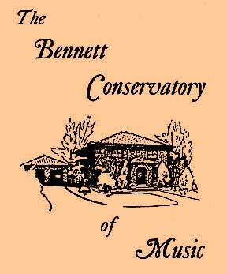

|
 |
For many decades at the beginning of its history, the Conservatory's dance classes, taught by the tiny but indomitable Fanya Del Bourgo, and the NYC Ballet's Val Buttignol, were among its most popular. We are pleased that the Conservatory will again be offering Adult Beginner Ballet taught by Jennifer Jiles, on the same professionally sprung hardwood dance floor downstairs where Fanya taught generations of students. We are also pleased to announce Art Classes for Tots 2-4 with Adults, and Children 4-7, taught by Lori Siegel. For more information on these new classes see end of Class Instruction Page |
| The Music
Together program with Linda Thornton has relocated to 39 North
Riverside Ave. For more information Click Here.
|